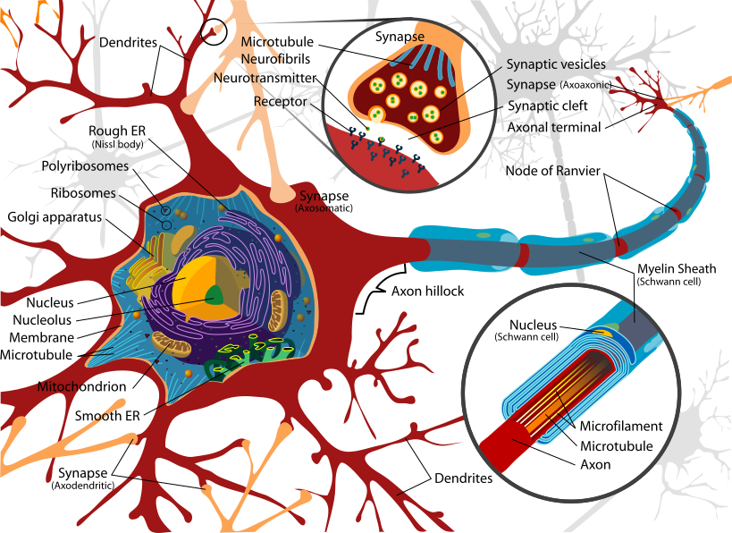

Redes Neurais Artificiais¶
Introdução¶
Imagine que você está tentando ensinar um computador a reconhecer gatos em fotos. Como você explicaria para uma máquina o que torna um gato um gato? As orelhas pontudas? Os bigodes? O formato dos olhos? Essa é exatamente a inspiração por trás das Redes Neurais Artificiais (RNA) — modelos computacionais que tentam imitar como nosso cérebro processa informações complexas.
As RNAs são uma das família de arquiteturas de modelos para aprendizado de máquina, especialmente úteis quando:
- Precisamos capturar padrões não lineares complexos que modelos tradicionais não conseguem
- Temos grandes volumes de dados e queremos que o próprio modelo descubra as características importantes
- Queremos processar diferentes tipos de informação como imagens, texto, áudio ou séries temporais
- O problema é complexo demais para ser resolvido com regras simples
Quando usar Redes Neurais?¶
Considere RNAs quando: - Os dados mostram relações claramente não lineares entre entradas e saídas - Você tem muitos dados e alta dimensionalidade - Precisa de extração automática de características (o modelo descobre sozinho o que é importante) - Quer processar múltiplas modalidades (imagem + texto, por exemplo)
Talvez outras técnicas sejam melhores se: - Você tem poucos dados ou o problema é simples — experimente modelos lineares, árvores de decisão ou kNN primeiro - Precisa de interpretabilidade total — prefira modelos mais transparentes como árvores ou regressão linear - Tem pressa para colocar em produção — RNAs precisam de mais tempo para ajuste fino
Quando as redes neurais são especialmente recomendadas?
Intuição RNA¶
Para conhecer um pouco da historia, vale a pena assistir esse vídeo.
O neurônio biológico¶
Nosso cérebro possui cerca de 86 bilhões de neurônios interconectados. Cada neurônio é como uma pequena unidade de processamento que:

Como funciona a comunicação neural:
- Dendritos recebem sinais químicos de outros neurônios
- Soma (corpo celular) soma e processa todos esses sinais
- Se a soma ultrapassa um limiar, o neurônio "dispara"
- O sinal elétrico percorre o axônio
- Sinapses liberam neurotransmissores para outros neurônios
É como uma corrente de dominós inteligentes — cada peça decide se vai derrubar a próxima baseado na força do impulso que recebeu!
Qual é a função principal do soma (corpo celular) no neurônio biológico?
O neurônio artificial¶
Como transformamos neurônios em números¶
Pegamos a ideia do neurônio biológico e criamos uma versão matemática simplificada. Imaginem o neurônio artificial como uma calculadora especializada que:

O que acontece aqui:
- Entradas (x₁, x₂, ..., xₙ): Os "dendritos" — informações que chegam
- Pesos (w₁, w₂, ..., wₙ): A "força das sinapses" — o quanto cada entrada importa
- Bias (b): O "limiar de ativação" — um ajuste fino
- Soma ponderada: Multiplicamos cada entrada pelo seu peso e somamos tudo
- Função de ativação (f): Decide se o neurônio "dispara" ou não
As equações fundamentais:
O que representam os "pesos" em um neurônio artificial?
Funções de ativação¶
As funções de ativação são responsáveis por introduzir não-linearidades no modelo. Sem elas, a rede seria essencialmente um modelo linear e incapaz de aprender e representar dados complexos que requerem não-linearidade para sua modelagem.
A função de ativação é como o interruptor que decide se o neurônio vai "ligar" (disparar) ou "desligar". Cada tipo tem sua personalidade:
1. Função Degrau (Step)¶
- Quando usar: Problemas simples de sim/não - Característica: Tudo ou nada, sem meio termo2. Função Sigmóide¶
- Faixa: Entre 0 e 1 (ótimo para probabilidades!) - Vantagem: Suave e diferenciável - Problema: Pode "saturar" com valores muito grandes3. Tangente Hiperbólica (tanh)¶
- Faixa: Entre -1 e 1 - Vantagem: Centrada no zero (melhor que sigmóide)4. ReLU¶
- Regra: Se positivo, passa; se negativo, zero
- Por que é popular: Simples, rápida e resolve problemas de gradientes em redes profundas
Por que a função ReLU é tão popular em redes neurais modernas?
Perceptron:¶
A história que mudou tudo¶
Em 1957, Frank Rosenblatt criou algo revolucionário: o Perceptron. Foi a primeira vez que uma máquina conseguiu "aprender" a separar coisas de forma automática. Imagine ensinar um computador a distinguir entre dois grupos de pontos apenas mostrando exemplos!
O Perceptron é como um neurônio artificial muito determinado — ele fica ajustando seus pesos até conseguir separar corretamente os dados. É o avô de todas as redes neurais modernas!
Como o Perceptron aprende¶
O algoritmo de aprendizado (versão simplificada):
- Inicializar: Comece com pesos aleatórios
- Para cada exemplo de treino:
- Calcule a saída:
y = f(soma dos pesos × entradas) - Compare com a resposta correta
- Se errou: Ajuste os pesos na direção certa
- Se acertou: Continue para o próximo exemplo
- Repita até parar de cometer erros
Qual foi a principal contribuição histórica do Perceptron?
O Teorema da Convergência¶
A promessa do Perceptron: Se seus dados puderem ser separados por uma linha reta (ou hiperplano), o Perceptron sempre vai encontrar essa linha, em um número finito de passos. É como ter a garantia de que, se existe uma solução, você vai encontrá-la!
Objetivo deste exercício¶
Você poderá:
- Ajustar manualmente os pesos w_1, w_2 e o viés b para separar os pontos de cada classe.
- Treinar automaticamente usando a regra de aprendizado do Perceptron.
- Visualizar a fronteira de decisão mudando de posição conforme os parâmetros.
Atividade inicial:
- Escolha o problema AND e tente ajustar manualmente até atingir 100% de acurácia.
- Depois, avalie para problema da OR e observe o que acontece.
- Por fim, tente o problema XOR e observe o resultado.
Perceptron — Exercício Interativo
Perguntas para reflexão¶
- Por que o Perceptron consegue aprender AND mas não XOR?
- O que acontece com a fronteira quando alteramos apenas o viés?
- Como a taxa de aprendizado influencia a velocidade de convergência?
As limitações que mudaram a história¶
O Perceptron tinha um problema fatal: só funcionava para problemas linearmente separáveis.
O famoso problema XOR:
| Entradas | Saída XOR |
|---|---|
| A B | Resultado |
| 0 0 | 0 |
| 0 1 | 1 |
| 1 0 | 1 |
| 1 1 | 0 |
Não importa como você tente, não existe uma linha reta que separe corretamente os 1s dos 0s neste problema! Essa limitação quase matou a pesquisa em redes neurais nos anos 1970.
Por que o problema XOR foi tão significativo para a história das redes neurais?
Multilayer Perceptron (MLP)¶
A solução para o problema XOR¶
Os cientistas descobriram algo incrível: se você empilhar neurônios em camadas, de repente consegue resolver problemas que pareciam impossíveis! O MLP (Multilayer Perceptron) nasceu dessa descoberta.
Como o MLP supera as limitações:
- Camadas ocultas: Criam representações intermediárias dos dados
- Múltiplas camadas: Cada camada aprende padrões mais complexos
- Backpropagation: Um algoritmo inteligente que ensina todas as camadas simultaneamente
É como ter vários especialistas trabalhando em sequência — cada um pega o trabalho do anterior e o refina ainda mais!
A arquitetura em camadas¶
O que cada camada faz:
- Entrada: Recebe os dados originais
- Oculta(s): Transformam os dados em representações mais úteis
- Saída: Produz a resposta final
Objetivo deste exercício¶
Você deve:
- Treinar um MLP para aprender o XOR usando backpropagation.
- Alterar taxa de aprendizado, épocas e função de ativação (tanh/ReLU).
- Visualizar a região de decisão sendo formada. Olhe a cor de fundo para saber a classe prevista para cada região. Use a linha preta apenas para ver onde a decisão muda (probabilidade ≈ 0.5).
Atividade inicial:
- Treine com
tanh, η=0.10, 300 épocas.- Verifique se a acurácia chega a 100%.
- Troque para
ReLUe compare a convergência.
MLP 2–2–1 — XOR
Pesos (ler/ajustar manualmente)
Perguntas para reflexão¶
- Por que o MLP consegue resolver o XOR, mas o Perceptron simples não?
- Como a taxa de aprendizado afeta a convergência?
Qual é a principal vantagem das camadas ocultas em um MLP?
Qual é a diferença fundamental entre um Perceptron e um MLP?
O Teorema da Aproximação Universal¶
Teorema incrível: Uma rede neural com apenas uma camada oculta e neurônios suficientes pode aproximar qualquer função contínua com a precisão que você quiser!
Em outras palavras: teoricamente, você pode ensinar uma rede neural a fazer qualquer coisa (desde que seja uma função matemática contínua). É como ter um "canivete suíço" matemático universal!
Atenção: o teorema não diz quantos neurônios você precisa — às vezes pode ser um número astronômico!
Guia prático: quantos neurônios usar?¶
Esta é uma das perguntas mais comuns: Quantos neurônios e quantas camadas devo colocar na minha rede?
Regras práticas históricas (use como ponto de partida, não como lei):
Para a camada oculta:¶
1. Regra dos ⅔:
2. Média geométrica:
3. Experimentação incremental (recomendado hoje):
- Comece pequeno
- Monitore treino vs validação
- Aumente gradualmente
- Use regularização para evitar overfitting
Para o número de camadas:¶
- 1 camada oculta: Problemas que viram lineares após uma transformação
- 2 camadas: Qualquer função contínua (teorema da aproximação)
- 3+ camadas: Funções descontínuas e padrões muito complexos (
Deep Learning!)